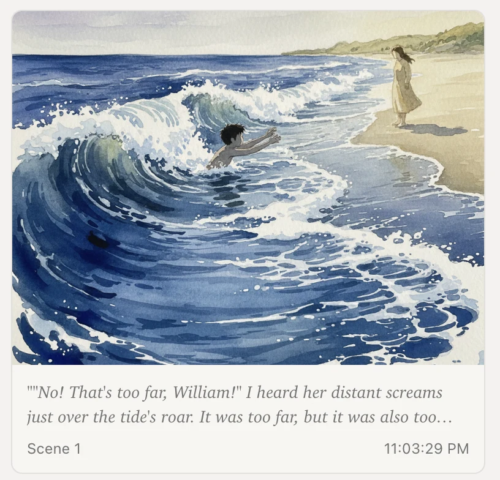
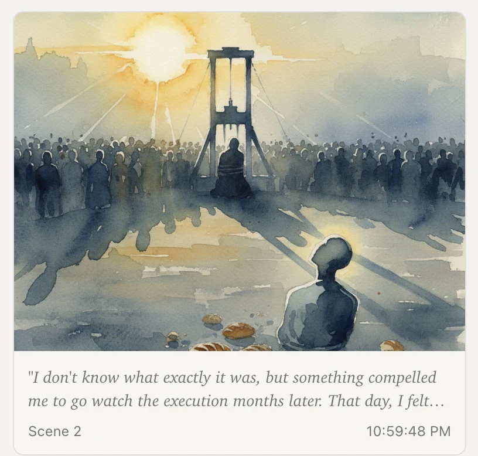
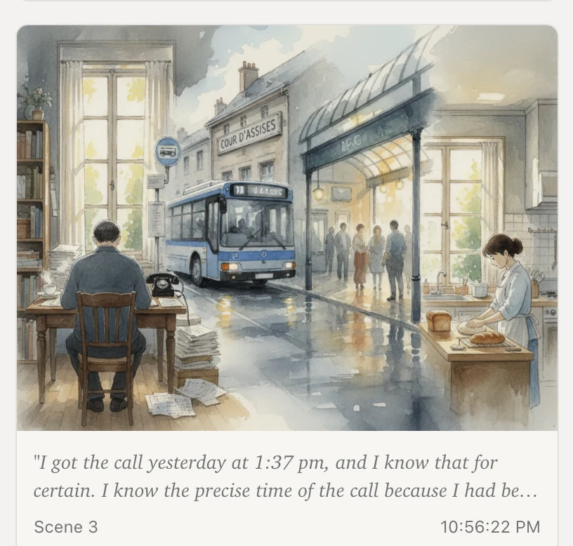
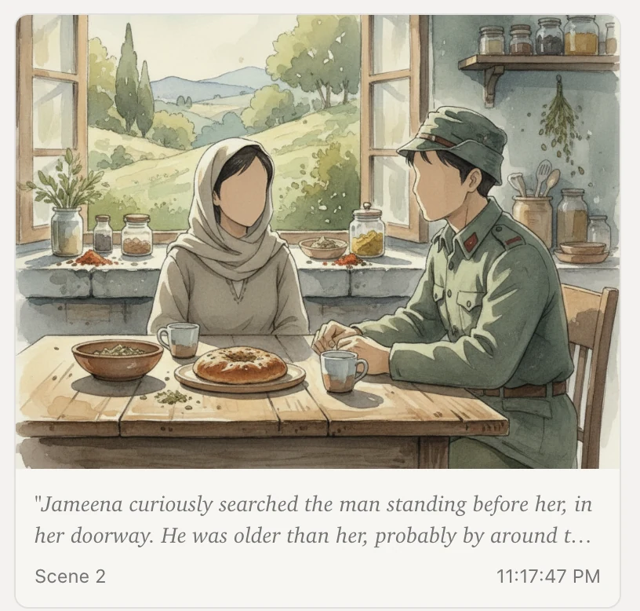

Tengo
Tengo, inspired by the character in Haruki Murakami's 1Q84, is a tool for writers to visualize their craft in real-time.
Overview
Tengo is a tool that explores what it is like to write stories and literature with two minds - one the crafter, and one the interpreter. Traditional word processors treat writing as a purely textual activity. But creative writing is inherently visual and often comes from a deeply internal place. Authors describe settings, imagine their character's surroundings, and build worlds in readers' consciousness. Tengo bridges this gap by generating Ghibli-inspired watercolor scenes in real-time, creating a visual stream that grows alongside a developing piece of narrative. The painted visuals help writers see what they are producing more clearly - this breeds momentum, more creativity, and adjustments when needed. The tool works in three components: an input layer as raw text from the user, an interpreter model that analyzes the text, and an image generator that outputs scenes ranging from a literal to a symbolic rendering.
Key features
Literary ontology
Tengo builds a concept map across Objects, Agents, Symbols, and Themes to extract latent features in your writing in real time. The ontology map evolves as you add text, and forms a visual network with the underlying structure of a body of work.
Visual stream
As the user writes, Tengo generates watercolor-style scenes that are designed with a cerebral style, as if pulled directly out of the user's imagination. The scenes are scrollable and display on the left side of the screen.
Literal-to-Symbolic toggle
The writer can control how the scenes appear, ranging from direct, literal interpretation to purely symbolic or abstract. This feature allows the user to understand different dimensions of a scene, or tailor the visual depending on style and tone.
Evolving ontology map
Each writing piece adds to a single, evolving ontology map that connects concepts across all of a writer's work. The map is navigatable and illustrates idea-stems and concept origins.
Design philosophy
Tengo is designed with an intentionally soft, cerebral aesthetic meant to look like it is drawing directly from one's internal world. A few core design decisions are:
Cerebral aesthetic
I used Gemini's Nano Banana Pro model with a system prompt to generate Ghibli-style, dreamlike images that look like watercolor paintings and that range from literal to symbolic based on a toggle feature that the user controls. The system prompt pulls directly from the toggle.
Writing interface
The interface prioritizes writing by placing the writing pane on the right side. I initially designed Tengo with the writing pane on the left, but adjusted after A/B testing with a few users who indicated that the right side feels more intuitive. Research backs this up - the right side of flat interfaces often inspires a 'call to action.'
Four-tier ontology
The literary ontology follows a deliberate hierarchy: Objects → Agents → Symbols → Themes. This structure mirrors how meaning builds in literature - concrete details ground the reader, characters drive action, recurring elements acquire symbolic weight, and themes emerge from the interplay of all three.
Future directions
The vision for Tengo is to create an interface for AI interpretability through writing. Because writing is so intuitive, watching how a model interprets your own words offers one of the clearest windows into its internal reasoning. My next step is to extend Tengo so the left-side visualization updates in real time with the model's latent representations as the writer types in the right pane. This requires applying interpretability techniques, most likely a sparse autoencoder (SAE), to surface the feature geometry and semantic structure the model derives from the text, and display it through cerebral imagery.



